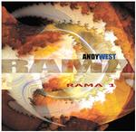

| Artist: | Andy West with Rama |
| Title: | Rama 1 |
| Label: | Magna Carta MAX-9061-2 |
| Length(s): | 41 minutes |
| Year(s) of release: | 2002 |
| Month of review: | [10/2002] |
| 1) | Mad March | 4.15 |
| 2) | Meetings | 5.55 |
| 3) | Herd Instincts | 4.36 |
| 4) | Bloomsday | 5.29 |
| 5) | Old Meat Frame | 4.50 |
| 6) | Memento Mori 5.05 | |
| 7) | Qubit | 3.24 |
| 8) | Government | 4.08 |
| 9) | Resonate | 4.54 |
Meetings has a more plodding feel with a dissonant guitar sound and a low growling bass. The melodies have a bit of a Middle-Eastern feel with all kinds of nice aural features. In the middle the guitar starts to meander a bit, giving the song a rather strong jazzrock feel. Lots of fiddling here.
On Herd Instincts the band moves in a different direction: the large amounts of low horn style sounds on this song and the presence of quite a bit of repetitive tension building elements, give the impression of Van Der Graaf Generator (elements of Lost can be found in here) going RIO. The fusion/jazz rock elements are not entirely gone, but
With Bloomsday we return to the meandering, slightly dissonant keyboards but with a more percussive take (rolling drums) and a growling guitar as well as strong rhythm guitar chords. Plenty of attention is given on these tracks at evoking the right atmosphere, instead of simply soloing into whatever direction might come along. This I guess separates a project such as this from most other instrumental projects.
Talking of instrumental, Old Meat Frame is in fact a vocal track, but the only one. The vocals are vocoded and more or less in the back. The groove is strong in this track, which is more modern than the previous tracks, in the direction of industrial rock. Morgenstein does very well on the drums.
With Memento Mori we move into darker realms. However this song changes it face more than most, with all kinds of fast string like intermezzo's on the keyboards and some plodding moody parts as well. The frivolous harpsichord passages and the like come over as being quite arbitrary. I am not that fond of this.
The band has a run in with a quantum bit on Qubit, a bit of this type is the basic material for a quantum computer. These bits are not merely one or zero, but a superposition of the two. One might say that the band have a certain chance of being one or zero. This rather short track is a moody bass dominated piece with various vibrant types of keyboards. A bit laid-back and waltzy.
Government is a catchy rock song with plenty of heavy chords, all in all not very different from the tracks early on the album. It does include a bluesy guitar solo, quite restrained and features a fast keyboard solo with Mike Keneally doubling along. Great playing.
The final track Resonate is a rather calm and flowing one with compositional input from Kit Watkins. This is a track that comes close to the laid back side of the Tone Center releases. I prefer this band loud.